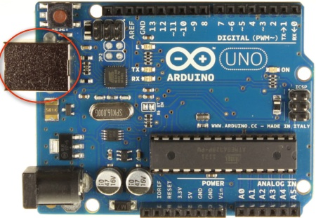
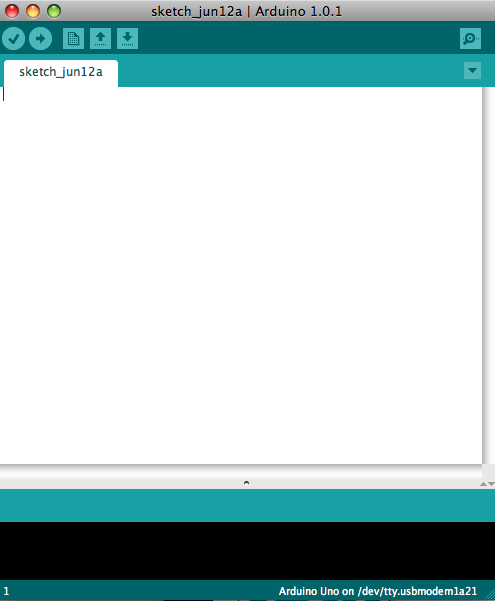
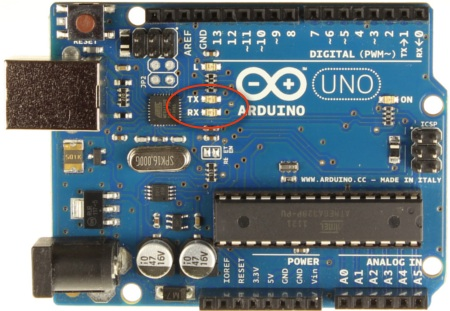
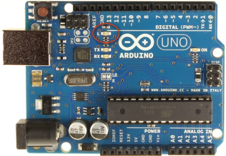

UTCS Lean In: Project Illuminate
Getting Started with Arduino
As mentioned before, Project Illuminate is using the Arduino Uno to control 25 color-changing LED lights.
Let's begin by understanding the Arduino board and its programming environment. Your group should do this part together, so please wait until everyone has finished the C++ tutorial.
Your board, an Arduino Uno, should look like this:

First, use the provided USB cable to connect the board to the computer
in the lab. You want to connect it to the computer UNDER the desktop
(not the one ON the desktop), as that is the computer running Linux.
The computer both communicates with the Arduino and provides power to
the Arduino through this cable. The large end connects to either of
the USB slots on the front of the computer, and the small end connects
to the board here:

When it is connected correctly, a green LED should turn on.
The Arduino board comes with its own programming environment. The Arduino programming environment is an IDE, or Integrated Development Environment, which is a program that is designed to aid in the development of other programs. An IDE will usually include a means of entering (typing in) and modifying programs, called an editor, and a means of translating the program to computer format called a compiler.
Now, let's open the programming environment. First, log in to the computer
using the username and password of one of your group members. Once logged in,
open a terminal (using the icon at the bottom of the screen, just as you did for
the C++ tutorial) and type arduino &. (The & tells the
computer to allow you to continue to use that terminal while the IDE is
running.)
A window should open that looks similar to this one:

This window is a sketchbook, and the sketchbook is where your Arduino
programming will begin.
Before you can use your board, you'll need to tell the computer where it is connected. Do this by going to Tools->Port and selecting the /dev/ttyACM0 port.
Challenge 1:
Blink Running on the Arduino
Now we'll practice using the board by executing one of the provided examples. From the File menu, select Examples->01.Basics->Blink. This will open a new sketchbook, Blink.
The Blink sketchbook consists of a single file, so there is only one tab at the top (labeled Blink). You'll notice that the file has two functions: setup() and loop(). These functions exist in every Arduino program. Arduino will execute setup() to initialize the device and then it will continuously execute the code in loop() until it is disconnected.
To run Blink, click on the right arrow in the tool bar. This arrow
tells the environment to compile the program and upload it to the
Arduino board.
After the file has successfully compiled and is being uploaded, the
transmit and receive LEDs on your board should blink. These LEDs
indicate that the board is receiving and transmitting data. They are
located here:

Once the program is uploaded, this LED should begin to blink orange:

Congratulations! You have successfully begun using the Arduino board.
Next, we'll learn to connect the lights.